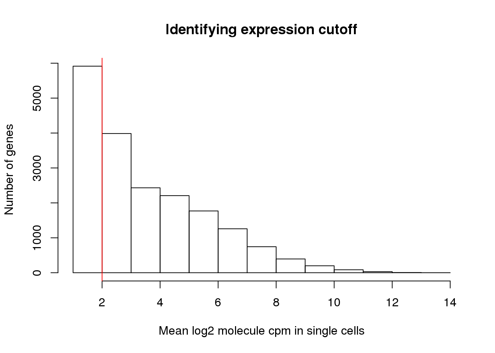
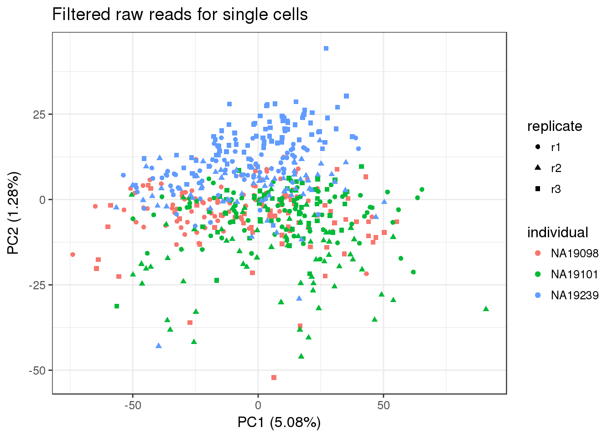
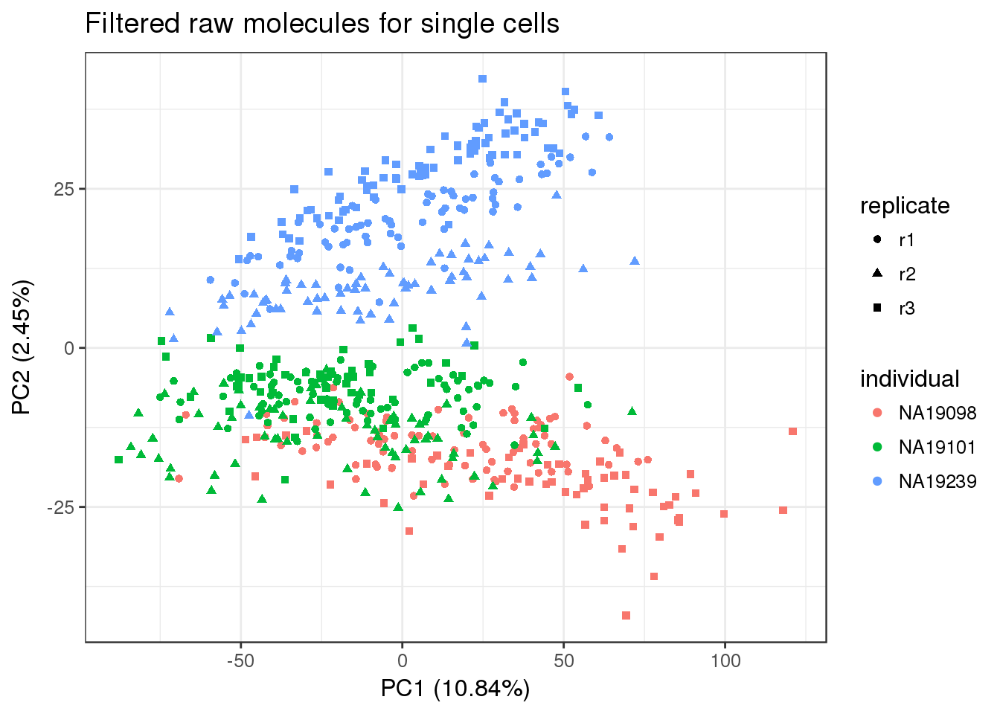
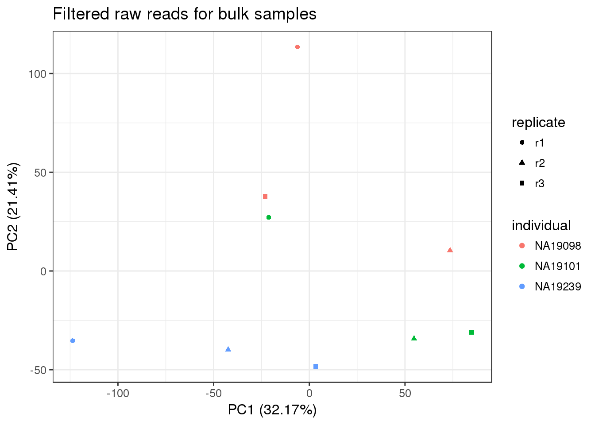

Last updated: 2017-03-06
Code version: d184779
library("biomaRt")
library("testit")
library("dplyr")
library("edgeR")
library("ggplot2")
theme_set(theme_bw(base_size = 12))
source("../../singleCellSeq/analysis/functions.R")This file uses the list of quality single cells defined by the quality control analysis to filter the count matrices. It also removes lowly expressed genes and genes with invalid molecule counts (greater than the maximum allowlable 1024).
Creates the following files:
annotation-filter.txt - Annotation file with only the high quality single cells
reads-filter.txt - Read counts in high quality single cells for filtered genes
reads-bulk-filter.txt - Read counts in bulk samples for filtered genes
molecules-filter.txt - Molecule counts in high quality single cells for filtered genes
anno <- read.table("../../singleCellSeq/data/annotation.txt", header = TRUE,
stringsAsFactors = FALSE)
head(anno) individual replicate well batch sample_id
1 NA19098 r1 A01 NA19098.r1 NA19098.r1.A01
2 NA19098 r1 A02 NA19098.r1 NA19098.r1.A02
3 NA19098 r1 A03 NA19098.r1 NA19098.r1.A03
4 NA19098 r1 A04 NA19098.r1 NA19098.r1.A04
5 NA19098 r1 A05 NA19098.r1 NA19098.r1.A05
6 NA19098 r1 A06 NA19098.r1 NA19098.r1.A06Imput read counts:
reads <- read.table("../../singleCellSeq/data/reads.txt", header = TRUE,
stringsAsFactors = FALSE)
stopifnot(ncol(reads) == nrow(anno),
colnames(reads) == anno$sample_id)Imput molecule counts:
molecules <- read.table("../../singleCellSeq/data/molecules.txt", header = TRUE,
stringsAsFactors = FALSE)
stopifnot(ncol(molecules) == nrow(anno),
colnames(molecules) == anno$sample_id)Input read counts for bulk samples (in order to filter genes).
reads_bulk <- read.table("../../singleCellSeq/data/reads-bulk.txt", header = TRUE,
stringsAsFactors = FALSE)
stopifnot(ncol(reads_bulk) == 9)Input annotation for bulk samples (for PCA plot).
anno_bulk <- read.table("../../singleCellSeq/data/annotation-bulk.txt", header = TRUE,
stringsAsFactors = FALSE)
head(anno_bulk) individual replicate well batch sample_id
1 NA19098 r1 bulk NA19098.r1 NA19098.r1.bulk
2 NA19098 r2 bulk NA19098.r2 NA19098.r2.bulk
3 NA19098 r3 bulk NA19098.r3 NA19098.r3.bulk
4 NA19101 r1 bulk NA19101.r1 NA19101.r1.bulk
5 NA19101 r2 bulk NA19101.r2 NA19101.r2.bulk
6 NA19101 r3 bulk NA19101.r3 NA19101.r3.bulkThis uses the list of quality reads we found using the QC_single_cell_library analysis.
Imput list of quality single cells. This list is in my data folder on my cell cycle github.
quality_single_cells <- scan("../../cell-cycle/data/quality-single-cells.txt",
what = "character")We filter the annotation, reads, and molecules data to only include quality single cells.
anno_filter <- anno %>% filter(sample_id %in% quality_single_cells)
reads_filter <- reads[, colnames(reads) %in% quality_single_cells]
molecules_filter <- molecules[, colnames(molecules) %in% quality_single_cells]
stopifnot(nrow(anno_filter) == ncol(reads_filter),
nrow(anno_filter) == ncol(molecules_filter),
anno_filter$sample_id == colnames(reads_filter),
anno_filter$sample_id == colnames(molecules_filter))This shows us the number of cells by batch. The number of good quality cells is not consitent across batches.
table(anno_filter$individual, anno_filter$replicate)
r1 r2 r3
NA19098 85 0 57
NA19101 80 70 51
NA19239 74 68 79We filter the genes to exlude both those that are lowly expressed or over-expressed (>= 1024 molecules in a given cell).
We identify the lower cutoff using the mean log2 molecule counts per million (cpm) in the 564 high quality single cells.
molecules_cpm_mean <- rowMeans(cpm(molecules_filter, log = TRUE))
hist(molecules_cpm_mean, xlab = "Mean log2 molecule cpm in single cells",
ylab = "Number of genes", main = "Identifying expression cutoff")
lower_exp_cutoff <- 2
abline(v = lower_exp_cutoff, col = "red")
Why are we worried about overexpressed genes?
genes_pass_filter <- rownames(molecules_filter)[molecules_cpm_mean > lower_exp_cutoff]13112 genes have a mean log2 molecule cpm greater than 2, including 48 ERCC genes.
Next we identify any genes which have greater than 1024 molecules in any given single cell. These are above our theoretical maximum number of UMIs (it can happen when a highly expressed gene as multiple start sites), and thus we cannot correct them for the collision probability. (is there another way to deal with this, isn’t it a problem that we exclude genes just because we cant deal with them)
overexpressed_rows <- apply(molecules_filter, 1, function(x) any(x >= 1024))
overexpressed_genes <- rownames(molecules_filter)[overexpressed_rows]
overexpressed_genes[1] "ENSG00000198888" "ENSG00000198804" "ENSG00000198712" "ENSG00000198899"
[5] "ENSG00000198938" "ENSG00000198886"I will look into what these genes are:
ENSG00000198888- mitochondrially encoded NADH
ENSG00000198804- mitochondrially encoded cytochrome c oxidase I
ENSG00000198712- mitochondrially encoded cytochrome c oxidase II
ENSG00000198899- mitochondrially encoded ATP synthase 6
ENSG00000198938- mitochondrially encoded cytochrome c oxidase III
ENSG00000198886- mitochondrially encoded NADH:ubiquinone oxidoreductase core subunit 4
ensembl <- useMart(host = "grch37.ensembl.org",
biomart = "ENSEMBL_MART_ENSEMBL",
dataset = "hsapiens_gene_ensembl")
overexpressed_genes_info <- getBM(attributes = c("ensembl_gene_id", "chromosome_name",
"external_gene_name", "transcript_count",
"description"),
filters = "ensembl_gene_id",
values = overexpressed_genes[grep("ENSG", overexpressed_genes)],
mart = ensembl)
overexpressed_genes_info ensembl_gene_id chromosome_name external_gene_name transcript_count
1 ENSG00000198712 MT MT-CO2 1
2 ENSG00000198804 MT MT-CO1 1
3 ENSG00000198886 MT MT-ND4 1
4 ENSG00000198888 MT MT-ND1 1
5 ENSG00000198899 MT MT-ATP6 1
6 ENSG00000198938 MT MT-CO3 1
description
1 mitochondrially encoded cytochrome c oxidase II [Source:HGNC Symbol;Acc:7421]
2 mitochondrially encoded cytochrome c oxidase I [Source:HGNC Symbol;Acc:7419]
3 mitochondrially encoded NADH dehydrogenase 4 [Source:HGNC Symbol;Acc:7459]
4 mitochondrially encoded NADH dehydrogenase 1 [Source:HGNC Symbol;Acc:7455]
5 mitochondrially encoded ATP synthase 6 [Source:HGNC Symbol;Acc:7414]
6 mitochondrially encoded cytochrome c oxidase III [Source:HGNC Symbol;Acc:7422]6 genes have counts greater than 1024 in at least 1 cell. They are all mitochondrial genes. This includes 0 ERCC control genes.
Update list of genes passing filters.
genes_pass_filter <- setdiff(genes_pass_filter, overexpressed_genes)Filter the data to only include the subset of 13106 genes which pass the lower and upper expression cutoffs. This subset includes 48 ERCC genes.
reads_filter <- reads_filter[rownames(reads_filter) %in% genes_pass_filter, ]
molecules_filter <- molecules_filter[rownames(molecules_filter) %in% genes_pass_filter, ]
reads_bulk_filter <- reads_bulk[rownames(reads_bulk) %in% genes_pass_filter, ]
stopifnot(nrow(reads_filter) == length(genes_pass_filter),
dim(reads_filter) == dim(molecules_filter),
nrow(reads_bulk_filter) == nrow(molecules_filter))Output the filtered data to my data folder of the github cell cylce folder.
write.table(anno_filter, "../data/annotation-filter.txt", quote = FALSE,
sep = "\t", row.names = FALSE)
write.table(reads_filter, "../data/reads-filter.txt", quote = FALSE,
sep = "\t", col.names = NA)
write.table(molecules_filter, "../data/molecules-filter.txt", quote = FALSE,
sep = "\t", col.names = NA)
write.table(reads_bulk_filter, "../data/reads-bulk-filter.txt", quote = FALSE,
sep = "\t", col.names = NA)Output new gene list that includes all filtered genes.
write.table(genes_pass_filter, "../data/genes-pass-filter.txt", quote = FALSE,
sep = "\t", row.names = FALSE, col.names = FALSE)pca_reads_filter <- run_pca(reads_filter)
pca_reads_filter_plot <- plot_pca(pca_reads_filter$PCs, explained = pca_reads_filter$explained,
metadata = anno_filter, color = "individual",
shape = "replicate") +
labs(title = "Filtered raw reads for single cells")
pca_reads_filter_plot
pca_molecules_filter <- run_pca(molecules_filter)
pca_molecules_filter_plot <- plot_pca(pca_molecules_filter$PCs, explained = pca_molecules_filter$explained,
metadata = anno_filter, color = "individual",
shape = "replicate") +
labs(title = "Filtered raw molecules for single cells")
pca_molecules_filter_plot
The individuals seperate on PC2 when we look at the data by molecule counts but not by read counts. The batch/replicate seperates slightly for NA1929 on PC2 in the molecule count PCA. wo
Because we start with the union of observed genes in the single cell or bulk samples and then the expression cutoff is based on the expresssion in the single cells, it is possible that a gene is not observed at all in the bulk samples. This causes an error with the PCA because that gene is invariant, so they are filtered before performing PCA. PLEASE EXPLAIN
reads_bulk_zeros <- rowSums(reads_bulk_filter) == 0
rownames(reads_bulk_filter)[reads_bulk_zeros][1] "ERCC-00048"pca_reads_bulk_filter <- run_pca(reads_bulk_filter[!reads_bulk_zeros, ])
pca_reads_bulk_filter_plot <- plot_pca(pca_reads_bulk_filter$PCs, explained = pca_reads_bulk_filter$explained,
metadata = anno_bulk, color = "individual",
shape = "replicate") +
labs(title = "Filtered raw reads for bulk samples")
pca_reads_bulk_filter_plot
sessionInfo()R version 3.3.2 (2016-10-31)
Platform: x86_64-redhat-linux-gnu (64-bit)
Running under: Scientific Linux 7.2 (Nitrogen)
locale:
[1] LC_CTYPE=en_US.UTF-8 LC_NUMERIC=C
[3] LC_TIME=en_US.UTF-8 LC_COLLATE=en_US.UTF-8
[5] LC_MONETARY=en_US.UTF-8 LC_MESSAGES=en_US.UTF-8
[7] LC_PAPER=en_US.UTF-8 LC_NAME=C
[9] LC_ADDRESS=C LC_TELEPHONE=C
[11] LC_MEASUREMENT=en_US.UTF-8 LC_IDENTIFICATION=C
attached base packages:
[1] parallel stats4 grid stats graphics grDevices utils
[8] datasets methods base
other attached packages:
[1] broman_0.65-1 gplots_3.0.1 matrixStats_0.51.0
[4] MASS_7.3-45 gridExtra_2.2.1 lme4_1.1-12
[7] workflowr_0.4.0 org.Hs.eg.db_3.4.0 GOstats_2.40.0
[10] graph_1.52.0 Category_2.40.0 Matrix_1.2-7.1
[13] GO.db_3.4.0 AnnotationDbi_1.36.2 IRanges_2.8.1
[16] S4Vectors_0.12.1 Biobase_2.34.0 BiocGenerics_0.20.0
[19] Humanzee_0.1.0 sva_3.22.0 genefilter_1.56.0
[22] mgcv_1.8-15 nlme_3.1-128 BiocInstaller_1.24.0
[25] scales_0.4.1 VennDiagram_1.6.17 futile.logger_1.4.3
[28] edgeR_3.16.5 limma_3.30.11 dplyr_0.5.0
[31] testit_0.6 data.table_1.10.4 biomaRt_2.30.0
[34] cowplot_0.7.0 stringr_1.2.0 reshape2_1.4.2
[37] rmarkdown_1.3 Citrus_0.99 easyGgplot2_1.0.0.9000
[40] ggplot2_2.2.1
loaded via a namespace (and not attached):
[1] httr_1.2.1 splines_3.3.2 gtools_3.5.0
[4] assertthat_0.1 RBGL_1.50.0 yaml_2.1.14
[7] RSQLite_1.1-2 backports_1.0.5 lattice_0.20-34
[10] digest_0.6.12 RColorBrewer_1.1-2 minqa_1.2.4
[13] colorspace_1.3-2 htmltools_0.3.5 plyr_1.8.4
[16] GSEABase_1.36.0 XML_3.98-1.5 devtools_1.12.0
[19] xtable_1.8-2 gdata_2.17.0 git2r_0.18.0
[22] tibble_1.2 annotate_1.52.1 withr_1.0.2
[25] lazyeval_0.2.0 survival_2.40-1 magrittr_1.5
[28] memoise_1.0.0 evaluate_0.10 tools_3.3.2
[31] munsell_0.4.3 locfit_1.5-9.1 lambda.r_1.1.9
[34] caTools_1.17.1 nloptr_1.0.4 RCurl_1.95-4.8
[37] rstudioapi_0.6 AnnotationForge_1.16.1 bitops_1.0-6
[40] labeling_0.3 gtable_0.2.0 DBI_0.5-1
[43] curl_2.3 R6_2.2.0 knitr_1.15.1
[46] rprojroot_1.2 futile.options_1.0.0 KernSmooth_2.23-15
[49] stringi_1.1.2 Rcpp_0.12.9 This site was created with R Markdown